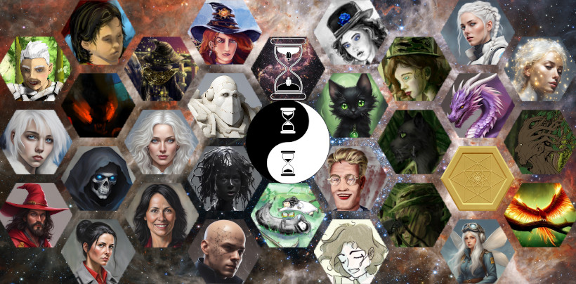
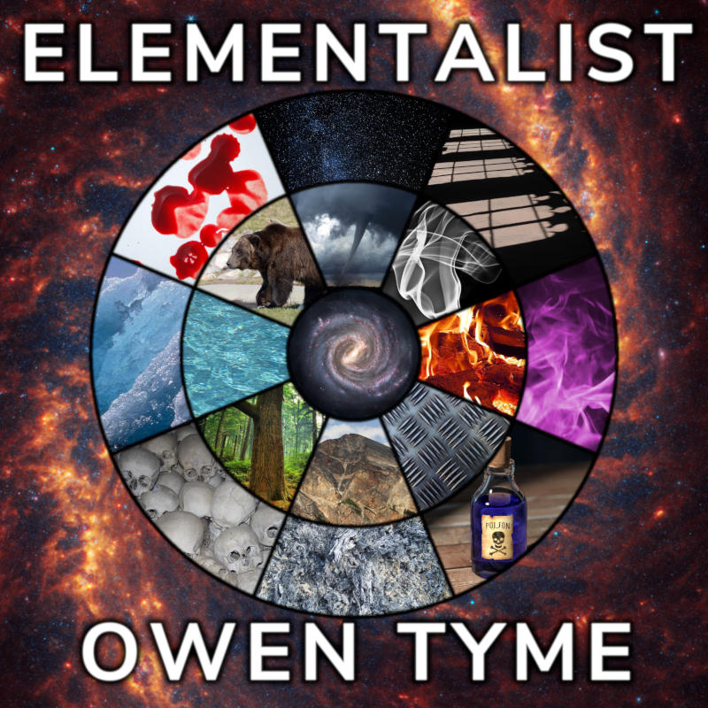

Tymely News
Elementalist #7

Elementalist is an album of mostly heavy metal that I'm working on as a companion to my Ashen Blades series of novels.
You can find the previous blog entries here:
Burning, Broken Heart
Track nine of Elementalist is titled Burning, Broken Heart, in which the Fire Spirit refuses to bow to the Hunter, despite the fact she successfully performed the Dance of Fire and Autumn, because she isn't the woman he loves, though he fails to comprehend the fact she's the woman's daughter.
Burning, Broken Heart is based on events from Scarlet Eye: Homecoming.
Lyrics
I fell in love with a witch,
With magic flames of blue!
She called me from my niche,
And for the witch's love I flew!The witch I did seek to woo,
And gave her a flower's flame!
Yet of me, she did eschew,
Claimed I wasn't for that dame!Chorus:
Scorch me now, my broken heart,
Where I once, others burned!
That refusal, awful smart,
And from her, I am turned!Choose a companion, I would,
Yet the witch rejected me!
This old spirit of Fire could,
But refuses to bow knee!Summoned by the Hunter,
Offered a place within!
I did not ever want her,
And our true battle did begin!(Chorus)
Power of vacuum, she wields,
Something I can't resist!
Which her body, also shields,
And traps with Void-touched twist!I lament of witch I love,
That I would prefer to serve!
And the Hunter knows the dove,
She's shocked enough to swerve!(Chorus)
Of her dear mother's last day,
Hunter's memory shared!
Learn of woman's final way,
Witch I loved was paired!Strange fate, it is to kiss shoe,
Of my love's own daughter!
If only I had but knew,
I wouldn't have been the plotter!(Chorus)
Here's a link to the MP3 file, if you'd like to download it.
Burning, Broken Heart is copyright 2026, Owen Tyme, all rights reserved, but free for your personal enjoyment. Lyrics by Owen Tyme, music generated with ACE-Step 1.5. E-mail me if you want to use it for something else.
Tags: audio, music, elementalist
Elementalist #6
Elementalist is an album of mostly heavy metal that I'm working on as a companion to my Ashen Blades series of novels.
You can find the previous blog entries here:
White Stag
Track eight of Elementalist is titled White Stag, in which the Animal Spirit comes to the Hunter, seeking the cleanup of an illegal chemical dump site and she delivers, leading the Animal Spirit to willingly serve her.
White Stag is based on events from Scarlet Eye: She Consumes Poison.
Lyrics
Fire spirit, sought to summon,
And got dance of autumn wrong!
And me, I got what's comin',
Fire did blast me high and strong!I flew like a dang rocket,
On a column of blue flame!
I vow never to botch it,
Screaming from sky for the blame!Chorus:
In the forest, I came to,
By the white stag, I was led,
And offered task to do,
To honor animal dead!Chemical barrels leaked,
And the land itself was sick!
Yet my interest piqued,
Impress Animal, the trick!For help, spirit asked me,
And I will never refuse!
Answering Animal's plea,
Is better than kissed shoe!(Chorus)
Gluttony, the culprit was,
Arch demon of modern waste!
Shark in dress suit for the laws,
But ever craving a taste!For clean-up, we cut a deal,
And found owner of the sludge!
Our enemy's fate, we seal,
I even aired my grudge!(Chorus)
I returned to chem spill,
Proper cleansed, I find land!
Follow stag to an old hill,
Animal accepts my brand!Gives me kittens, a pair,
My cute earrings, they became!
I thought the bargain most fair,
Proving Animal is tame!(Chorus)
Here's a link to the MP3 file, if you'd like to download it.
White Stag is copyright 2026, Owen Tyme, all rights reserved, but free for your personal enjoyment. Lyrics by Owen Tyme, music generated with ACE-Step 1.5. E-mail me if you want to use it for something else.
Tags: audio, music, elementalist
Elementalist #5
Elementalist is an album of mostly heavy metal that I'm working on as a companion to my Ashen Blades series of novels.
You can find the previous blog entries here:
Goodbye, Dear Friend
Track six of Elementalist is titled Penance of Metal, in which the Metal spirit feels nothing but guilt about killing Clayton Simmons and considers how to make things right, eventually deciding to seek out the Hunter, to serve her as a form of penance and during their second encounter, she accepts the Metal Spirit.
Goodbye, Dear Friend is based on events from Demon for President! and She Seeks Peace.
Lyrics
I took the sleuth Clayton's life,
For youth to save, bargain made.
Metal regrets Metal's knife,
Can it be more than a blade?My will now broken by man,
I know not what I've become.
Mother, is there some grand plan?
For I am no longer numb!Chorus:
Metal is as Metal does,
Rigid, solid, bending not!
Metal made from that which was,
By Metal’s way, Metal’s caught!Pain of soul for life taken,
Man torn from wife, awful stun.
Metal is also shaken,
For father stolen from son.Metal weeps for rigid way,
Metal wishes it could bend!
Yet Metal's way, can't betray,
Lest the whole world come to end!(Chorus)
Came to judge, human of heart,
And she, the demon of mind.
Yet Metal regrets its part,
And seeks to be aligned.Will Hunter accept Metal?
Will she, the offer refuse?
Metal will recoil from nettle,
And say, "Sorry for abuse."(Chorus)
First, I find her in a field,
Full of cows and metal fence.
For rejection, was steeled,
And she got herself from thence.Next found her in a battle sore,
Hunter's heart and mind apart!
Offered her Metal's roar,
We gave demon mind the dart!(Chorus)
Here's a link to the MP3 file, if you'd like to download it.
Penance of Metal is copyright 2026, Owen Tyme, all rights reserved, but free for your personal enjoyment. Lyrics by Owen Tyme, music generated with ACE-Step 1.5. E-mail me if you want to use it for something else.
Tags: audio, music, elementalist
Elementalist #4
Elementalist is an album of mostly heavy metal that I'm working on as a companion to my Ashen Blades series of novels.
You can find the previous blog entries here:
Goodbye, Dear Friend
Track six of Elementalist is titled Goodbye, Dear Friend, in which the Hunter mourns the loss of Clayton Simmons, the private detective that had been her work partner.
Goodbye, Dear Friend us based on events from Demon for President!.
Lyrics
Metal spirit judges me,
For my crime of self-defense.
Metal blustered with glee,
Made an atmosphere most tense.Sleuth Clayton spoke to Metal,
Demanding, "Get to the point!"
The matter, might later settle,
And spirit turns the spear-point.Chorus:
Closest friend has passed on,
By the way of Metal's rage.
He got caught up as its pawn,
But from my book took a page.Caution with spirits, the way,
Clayton should not have done that.
A challenge, became the day,
To get by without the cat.My brother, the little kitten,
Made my dear friend very strong.
Without which he'd be smitten,
And worried all would go wrong.(Chorus)
Clayton sought to save the day,
But left kitten far behind.
He ran straight into the fray,
Got caught in a nasty bind.Sniper bullet came to him,
Metal slowed perception.
To offer him a good-bye grim,
And respectful reception.(Chorus)
Metal really screwed up,
Because Clayton's will was firm.
Spirit's plan, he did disrupt,
Forced Metal low like worm.Bargain struck, to save the day,
Clayton's life for many youth.
Though Metal's mind he did sway,
Spirit could not spare dear sleuth.(Chorus)
Here's a link to the MP3 file, if you'd like to download it.
Goodbye, Dear Friend is copyright 2026, Owen Tyme, all rights reserved, but free for your personal enjoyment. Lyrics by Owen Tyme, music generated with ACE-Step 1.5. E-mail me if you want to use it for something else.
Tags: audio, music, elementalist
Elementalist #3
Elementalist is an album of mostly heavy metal that I'm working on as a companion to my Ashen Blades series of novels.
You can find the previous blog entries here:
Saddling the Storm
Track five of Elementalist is titled Saddling the Storm, in which the Hunter faces the Air Spirit in the plains of Kanans, on a random rural route somewhere near Wichita, during which she had the story of Pecos Bill on her mind. That's the reason her magic clothes embraced a more Old West vibe than usual.
Saddling the Storm us based on events from Demon for President!.
Lyrics
I fought in the Kansas plain,
Sore wounded, was bleeding much.
And of magic, felt the drain,
My aching head, I did clutch.While down, Air thought to kick me,
Stirred up a huge twister!
Biggest one I'll ever see,
All to save his tree-sister!Chorus:
Saddle this great storm, will I now,
And make Air spirit my own!
This bucking horse will soon bow,
Proper place, it will be shown!In car, family of four,
Screaming in total distress!
Also cow, boulders galore,
This could be a real bad mess!I've got to save everyone,
Or from conscience, this girl fry!
Only one chance at this run,
A way forward do I spy!(Chorus)
Lasso to catch this wild horse,
I fashion within my mind!
Start with shadow smoke, of course,
Ideas also, for the bind!I will now lasso the storm,
And fashion a saddle to ride!
Car and cow part of the form,
Held tight and safe, they'll now bide!(Chorus)
With sulfur smoke, to offend,
On mental ground, for a fight!
And tree spirit I might send,
To demon's stomach, for spite!Air spirit flies to save tree,
And demon, the spirits cage!
I cut with wakizashi,
Shadow trap now ends Air's rage!(Chorus)
Here's a link to the MP3 file, if you'd like to download it.
Saddling the Storm is copyright 2026, Owen Tyme, all rights reserved, but free for your personal enjoyment. Lyrics by Owen Tyme, music generated with ACE-Step 1.5. E-mail me if you want to use it for something else.
Tags: audio, music, elementalist
Elementalist #2
Elementalist is an album of mostly heavy metal that I'm working on as a companion to my Ashen Blades series of novels.
You can find the previous blog entry here.
On the Subject of Videos
I've been experimenting with making simple videos this week, using just a static image of the cover of the album, beside an AI-generated image of something appropriate based on the source novel/novella. If you'd like to see the videos for previous tracks, they'll be at the end of this blog post.
A Watery Grave
Track four of Elementalist is titled A Watery Grave, in which the Hunter goes to a summer camp infested with demons, to wipe them out, but along the way, the Water Spirit notices the Wood Spirit stuck inside her mind and attacks with intent to kill. It turns into a real nasty series of fights.
A Watery Grave us based on events from She Goes to Summer Camp, which is sold bundled as part of She Goes to War.
Lyrics
Took a dive in a deep lake,
Looking for demons hiding,
For teen summer camper's sake,
Thought to do the dividing.Notice, water spirit took,
Of tree spirit in my head,
And she did give me the hook,
Dragging me to certain dread!Chorus:
The ocean's spirit may force,
For me a watery grave!
Showing no sign of remorse,
If myself, I cannot save!Shadow save me from the depths,
Safely to land, I return,
By making the shadow-steps,
Forced retreat does my pride burn!By day I ride in canoe,
Nervous about water's wrath,
Hoping water has no clue,
But spirit does see my path!(Chorus)
Spirit strikes like semi-truck,
Confidence and ribs breaking,
Land on shore, with little luck,
Her punches leave me aching!Confront the spirit by night,
Holding hostage, spirit tree,
And the lake rises up to fight,
Though she never bows her knee!(Chorus)
For others, to safely keep,
I walk beside lake alone,
Water attempts, me to reap,
Attacking my blood and bone!I consume water's magic,
And force tree spirit to strike,
My demon fends off tragic,
Together, give her the spike!(Chorus)
Here's a link to the MP3 file, if you'd like to download it.
A Watery Grave is copyright 2026, Owen Tyme, all rights reserved, but free for your personal enjoyment. Lyrics by Owen Tyme, music generated with ACE-Step 1.5. E-mail me if you want to use it for something else.
Videos for Older Tracks
Tags: audio, music, elementalist
Elementalist #1
Once again, I'm making a musical album, this time titled Elementalist. The music centers around the main character of Ashen Blades, who's known by many names and insults, including The Hunter, Little Miss Secret, LMS, brat, Itsa Secret Watson, and most recently, Artemis Watson.
This album will revolve around her various encounters with the elemental spirits and the way defeating them in battle has been transforming her magical powers.
So far, I've got three tracks done, including The Hunter, Call of the Jungle and Unwanted War, which will be the first three and an excellent introduction for things to come.
So far, every song has been written from the perspective of The Hunter, but I have plans for at least one future track to be from the perspective of the Metal Spirit and if I can figure out how, one of them is supposed to be a duet, between The Hunter and the Smoke Spirit.
However, I'll be honest, here and now: the album isn't likely to be finished for quite some time, because some of the encounters with elemental spirits have not been written yet and I don't want to paint myself into a corner, through musical lyrics, something I did a little bit with Rowley's Roar (lesson learned, not making that mistake again).
Alternatively, I may break Elementalist up into a series of two or three albums and mix in some material unrelated to the elements.
Regardless, I'm finding inspiration for the novels while writing lyrics and the story is going to take some wild twists in the future, especially as the end of the series draws near.
Within the series, I may make reference to these songs, via Alice, the third personality of the Hunter. In retrospect, she's always been a little one-dimensional, little more than a stoner personality created through an unwanted splash of LSD in the face, but I think giving her some talent for music and other creative endeavors would be an interesting way to flesh her out in future volumes, since the three personalities of the Hunter have been getting along better in the volume I'm writing at the moment.
They're likely to start treating the Hunter's body like a timeshare in the novel to follow, to find a better mental balance. Since that's She Hunts Gremlins, it would be an amusing for Alice to be using AI to make music based on the Hunter's life story.
The Hunter
The first song is a heavy metal track titled The Hunter, in which she introduces herself, in song, giving a rough summary of her motivations.
I love the little echoing guitar plucks in this one.
You can read more about the Hunter from her character feature or you can go into greater depth by reading She Hunts Demons, which starts the series and by the way, the Ebook is currently free in most stores (Amazon hates independent authors doing permanent freebies, but you can request a price match).
Lyrics
Demon-hunter: my father,
Demon-witch: my own mother,
Little black cat: my brother,
I'm not one or the other!Within me is a demon,
But that is not all I am!
Within me is a human,
Conflict fills my every gram!Chorus:
Revenge, my favorite dish,
They say it is best served cold,
Hot rage, certainly my niche,
Can I, these feelings withhold?Also, a witch within me,
Giving me the best of flame,
My shadows seek to be free,
Yet no one gave me a name!The Hunter, I call myself,
Though I cannot speak my truth,
Not a model off the shelf,
And forever in my youth!(Chorus)
Parents dead by demon hand,
Every demon would I cease!
Will I rage throughout the land,
Or find little bit of peace?My inner grief never ends,
And demon curse took my voice!
He can never make amends,
And for me, there be no choice!(Chorus)
The war will last forever,
The fight is always dirty,
That demons I might sever,
But still time to be pretty!Heroes can show up a mess,
I think heroines should not,
I'm no damsel in distress,
The little black dress, my lot!(Chorus)
(Chorus)
Here's a link to the MP3 file, if you'd like to download it.
The Hunter is copyright 2026, Owen Tyme, all rights reserved, but free for your personal enjoyment. Lyrics by Owen Tyme, music generated with ACE-Step 1.5. E-mail me if you want to use it for something else.
Call of the Jungle
The second song is a heavy metal track titled Call of the Jungle, in which the Hunter is ambushed by the Wood Spirit in the jungles of Veitnam, in 1972, when she tracked a demon there on a seek and destroy mission.
This marks the beginning of her conflict with the elemental spirits, though it could also be termed a dialog, because not every spirit attacks her and some choose to join their minds to hers.
The beat of this one very much reminds me of a heartbeat, which gives it a certain animal urgency that's very fitting to the scenes from the novel it's based on.
This song is based on events from She Goes to War, if you'd like to read the original source material.
Lyrics
Demons did fill the jungle,
And I came to slay them all,
In mud, I took a trundle,
Not a very graceful fall.I heard the call of the wild,
It was pounding in my ear,
And the jungle whispered mild,
It drew my soul very near.Chorus:
Jungle high-jacked my body,
And did take it for a spin!
But her control is shoddy,
A fight she can never win!Rises up, my nature feline,
A panther, I now become,
Despite it, my will still mine,
I won't be put under thumb!She can't break me, I won't kill,
Every human, safe from me,
I would die upon that hill,
Before bowing to some tree!(Chorus)
"Mine!", say I to tree's spirit,
Of my body, mind and soul,
Felonious wood pirate,
So, go on, and take a stroll!In my heart, she's taken root,
Refuses to accept a hint,
While my friends press the dispute,
Fight for me, some little glint!(Chorus)
You might call me weed whacker,
After taking sword to tree,
And I really smack her,
With my old wakizashi!"Kneel before me now, or die,"
"Body-jacking spirit tree,"
"Kiss this very boot or fry!"
So she surrenders to me!(Chorus)
(Chorus)
Here's a link to the MP3 file, if you'd like to download it.
Call of the Jungle is copyright 2026, Owen Tyme, all rights reserved, but free for your personal enjoyment. Lyrics by Owen Tyme, music generated with ACE-Step 1.5. E-mail me if you want to use it for something else.
Unwanted War
The third song is a rock track titled Unwanted War, in which the Hunter laments, in retrospect, about the war she never wanted, which came to her, because she can't get the Wood Spirit out of her head and the other nature spirits eventually took notice, attacking out of familial rage.
This song is based on comments passed between Verda Bagley and the Hunter, during She Goes to Summer Camp, but their efforts to remove the Jungle Spirit from the girl's mind were no more than a passing comment. Technically speaking, that one is more properly termed the Wood Spirit, but the characters didn't really puzzle that out until the book after that, if I remember correctly.
Lyrics
Already fighting a war,
I didn't want another.
Elements gave me a chore,
And I can't whine to mother.Tree spirit did attack me,
Simply for wrong place, wrong time.
Out of my head and be free,
I don't want to pay the dime!Chorus:
Over my corpse, they'd rejoice,
Spirits seek my life to hew!
This girl has no better choice,
She'll have to win this war too!What of spirits, anyway,
And why don't they mind their place?
Why do they each, at me bray,
And occasionally chase?Air tried to slay me in sleep,
And Earth woke from her slumber!
Then Metal questions me most deep,
Fire also in the number!(Chorus)
What's a girl supposed to do,
With situation nagging?
Can I find a good way through,
Maybe send spirits packing?Can I do what none before,
No man, witch or demon can?
Force every one to my core,
And make spirits my divan?(Chorus)
I'm resigned to stupid fate,
The war of spirits, to win.
They'll probably always hate,
But I can ignore their din.Mine, will their powers soon be,
For revenge, I may obtain.
For my most violent spree,
Ensuring all demons, slain.(Chorus)
Here's a link to the MP3 file, if you'd like to download it.
Unwanted War is copyright 2026, Owen Tyme, all rights reserved, but free for your personal enjoyment. Lyrics by Owen Tyme, music generated with ACE-Step 1.5. E-mail me if you want to use it for something else.
Tags: audio, music, elementalist